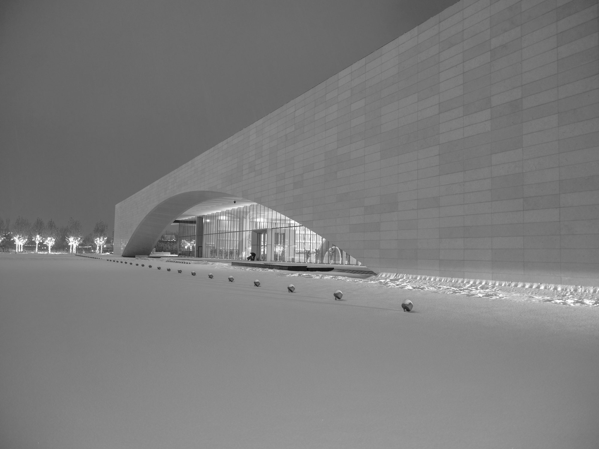
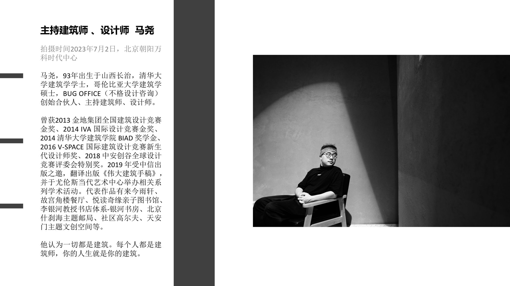
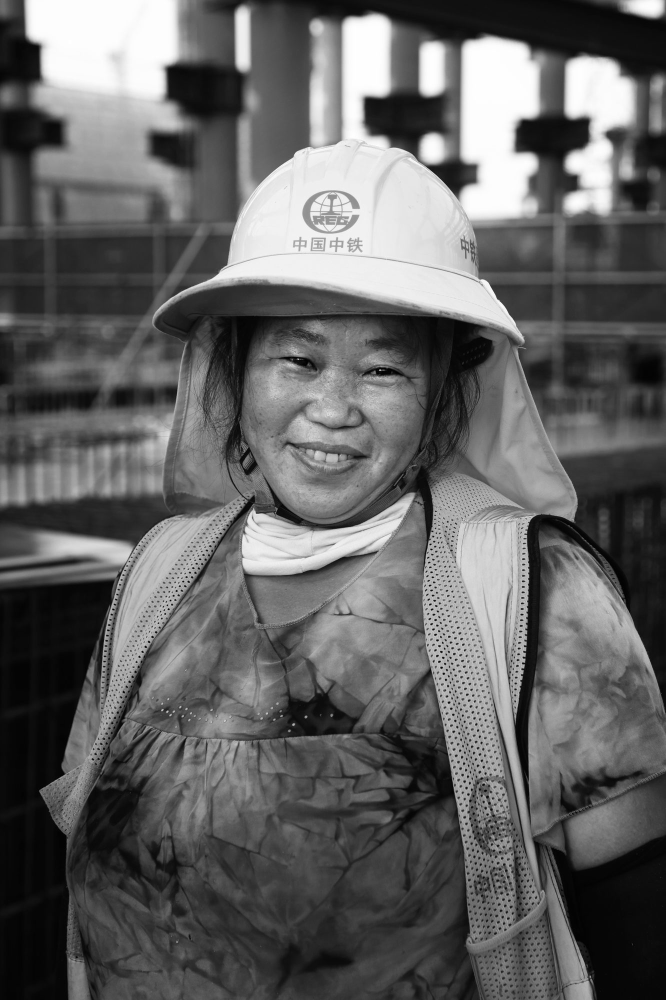

摄影师 · 独立音乐人 · 诗人 · 编剧
用影像触摸时代的体温。
长期关注中国城市更新与 80、90 代际创作者的生存境况。 2023—2026 年数十次往返雄安驻地创作，以镜头留存真实，以文字并置影像，记录一代人的精神肖像。


张悦（笔名一粟），毕业于中国艺术研究院摄影与数字媒体方向。 曾任职摩登天空杂志编辑、高校教师，中国女摄影家协会会员，新华社 / 中国摄影网签约摄影师、特约记者。